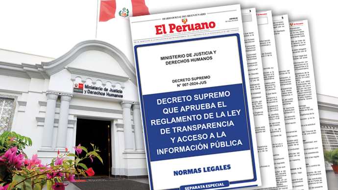

Oficina de Informacion Publicaa
Acceso a la Informacion Publica
Atencion: Mañana 08:00 - 12:00
Acceso a la Informacion Publica
Atencion: Mañana 08:00 - 12:00
Acceso al Portal de transparencia
Atencion: Tarde 14:00 - 18:00
Area de Adquisiciones
Atencion: Todo el dia: 08:00 - 20:00 hrs.